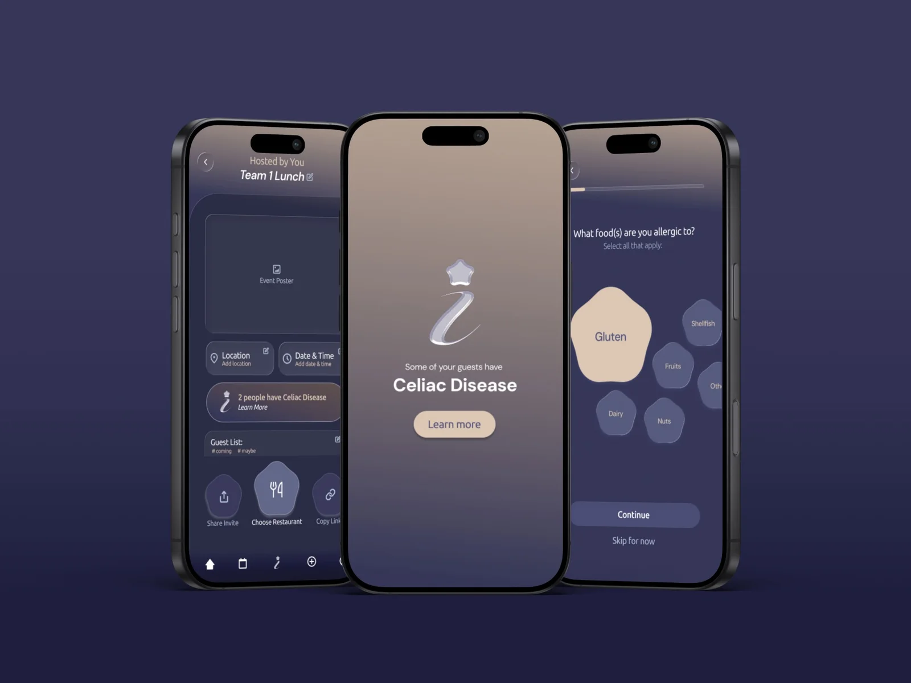

ux design
invetty
an app that lets event guests share dietary needs privately, so people with celiac disease stop vetting every shared meal on their own
- role
- led a team of four
- year
- 2026
- tools
- FigJam, Figma
- type
- ux design, case study